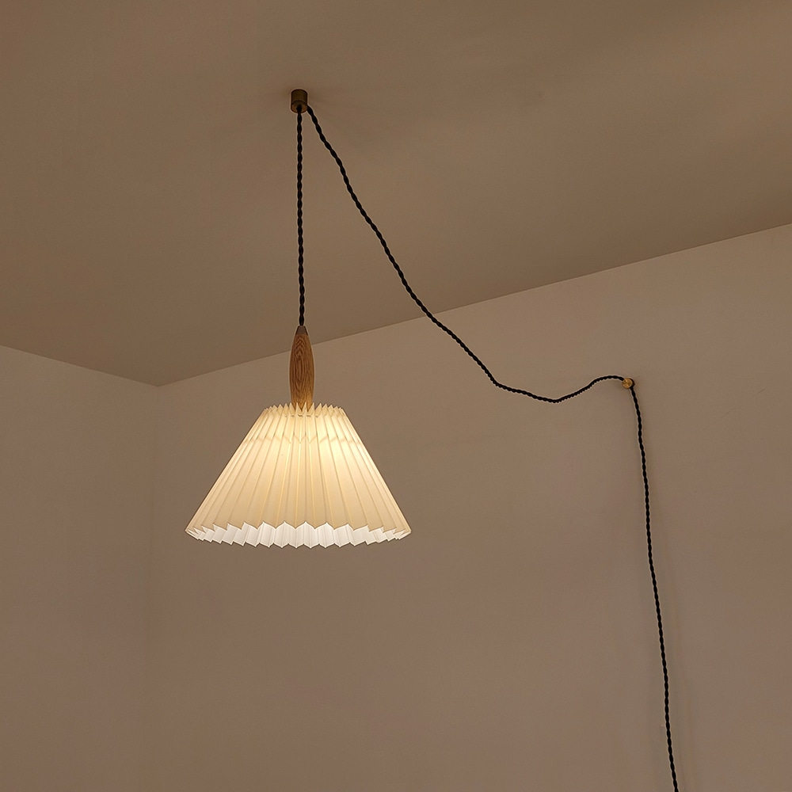

먼저 바꿀 조명
코램프 주름갓 펜던트 플리츠 1등 조명 스몰 플러그형
스몰 / 플러그형(고정홀더형) / 오크 원목 + 아이보리 주름갓
176,000원
무료배송
밝은 오크 + 아이보리 주름갓. 전기선 연결 없이 플러그로 설치.
상품·실사용 사진 보기 ↗고른 이유 · 크기 · 확인할 점
흰 주름갓에 밝은 우드는 소량만 들어가므로 화이트 가구와 잘 이어진다. 복제품 판매자의 정체와 배선 옵션을 추측하던 기존 펜던트보다 구매 사양이 명확하다.
- 크기
- 갓 지름 27 / 총 높이 28 / 선 길이 400
- 소재
- 패브릭, 오크 원목, 스틸. 바디 한국 제조, 갓 중국 제조 표기.
- 후기
- 18개 · 해당 스몰 플러그형 단일 상품. 브랜드 검색결과의 324개 리뷰는 여러 크기를 묶은 별도 상품이므로 이 상품 후기로 합산하지 않음.
- 설치
- 천장 전선 직결 불필요. 천장과 벽에 홀더 2개를 나사로 고정하는 제품으로 무타공 제품은 아님.
- 폰 제어
- E26 스마트전구는 G45 크기와 소비전력 제한을 충족해야 함. 일반 큰 스마트전구의 물리적 적합성 및 스마트플러그 재전원 복귀는 미확인.
검은 꼬임 코드가 노출된다. 27cm 스몰은 2인 식탁에 가볍지만 기존 금속 3단 갓과 실루엣은 달라진다. 천장 고정 방식은 현장 재질과 임대 조건에 따라 결정.
176,000원 + 판매처 노란빛 전구 5,000원. 무료배송.
판매처 사진 · 자연광과 화면에 따라 실제 색 차이 가능
추가 근거 1 ↗